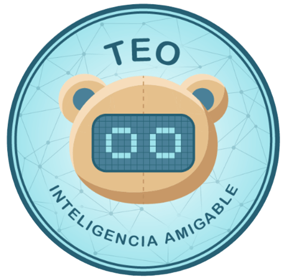

Una misma identidad para toda la app
Guía visual común v1 · Propuesta para revisión · 13 de octubre de 2026

Paleta compartida
#F8F5ED#FFFFFF#255763#1D343B#52636A#B6E2E8#E8BE73#C6E6BD#DEE3F3#E3E5E4#E0E3E2#A12E2ELos colores y tamaños son una normalización propuesta de los bocetos. La comparación final se hace en Android, con el Samsung S25.
Jerarquía de texto
Título de pantalla
Título de tarjeta · 18 sp
Texto principal legible · 16 sp
Ayudas y textos secundarios · 14 sp
Etiquetas de estado · 12 sp
En Android: familia sans-serif, texto en sp y escalado del sistema. Esta muestra usa la fuente disponible en el navegador.
Acciones y sus estados
Probá Aplicar cambios para ver el estado de envío. Es una demostración sin conexión con TEO.
Conexión y actividad son distintas
Cada estado tiene texto. Las etiquetas no son botones y su color no es la única señal.
Una métrica reconocible
Última señal emocional registrada
TranquiloNúmero ficticio. El globo crece si el dato necesita más espacio.
Campos y mensajes
Espacios y superficies
Medidas iniciales y mínimas. El contenido, la fuente ampliada y los insets pueden exigir más espacio.
Celebrar un logro
TEO acompaña el festejo.
El confeti se conserva. Esta decoración es una muestra; el recurso final se prepara por separado.
Cuatro destinos principales
Podés cambiar la selección para revisar el estado visual. Las vistas secundarias usan su recorrido de regreso.